Three full-stack projects I built and can walk through line by line. Everything below is real: the apps run against actual databases, the screenshots come from the running apps, and NexMart is deployed and live. Clone them, run them, break them, ask me why.
What it solves: most product demos online are a handful of mocked components. This is a full shop — catalogue with search, filters and pagination, cart and wishlist, Stripe checkout, order history and an admin dashboard. Payments are settled by a server-side webhook, and stock is reserved inside the order transaction so two shoppers can't race the last unit.
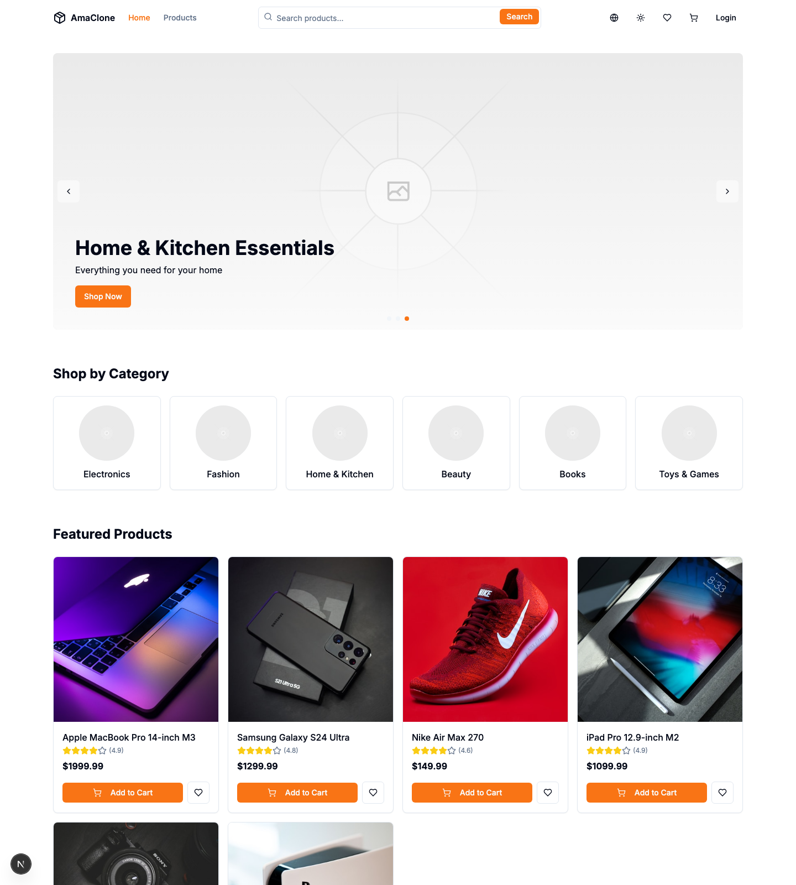
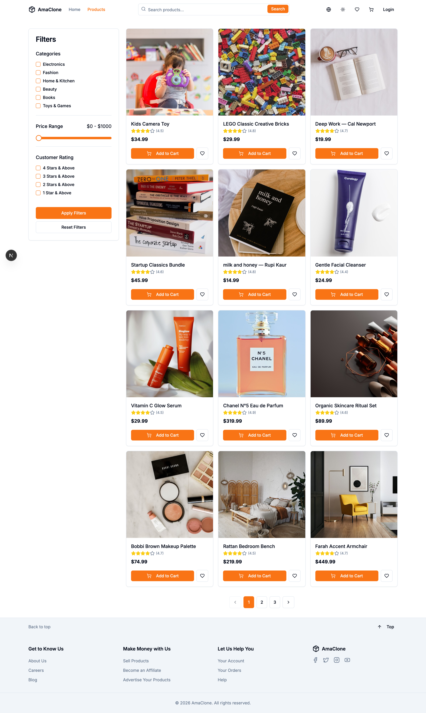
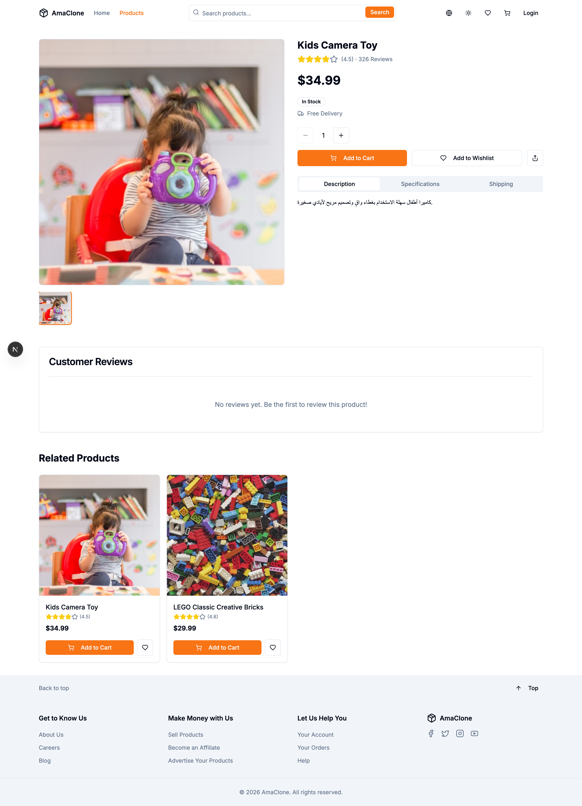
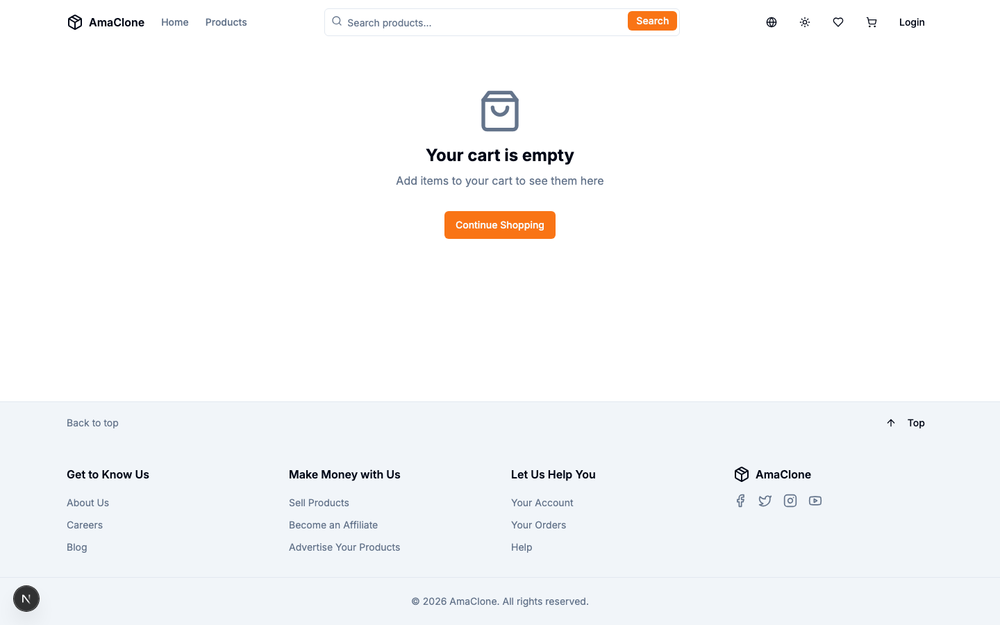
# The quick route — one command brings up Postgres, migrations, seed data and the app. git clone https://github.com/Mahmod-mourad/e-commerce-platform-NexMart.git cd e-commerce-platform-NexMart docker compose up --build # App: http://localhost:3000
.env. Nothing is mocked — the catalogue, reviews and orders are real database rows.What it solves: a task tracker for small teams, but built properly: every company that signs up gets its own tenant, and the isolation is enforced in the database with Postgres row-level security — not just in application code. There's a task board, per-project statistics, real-time updates over Socket.IO, and a test suite covering unit, integration and e2e.
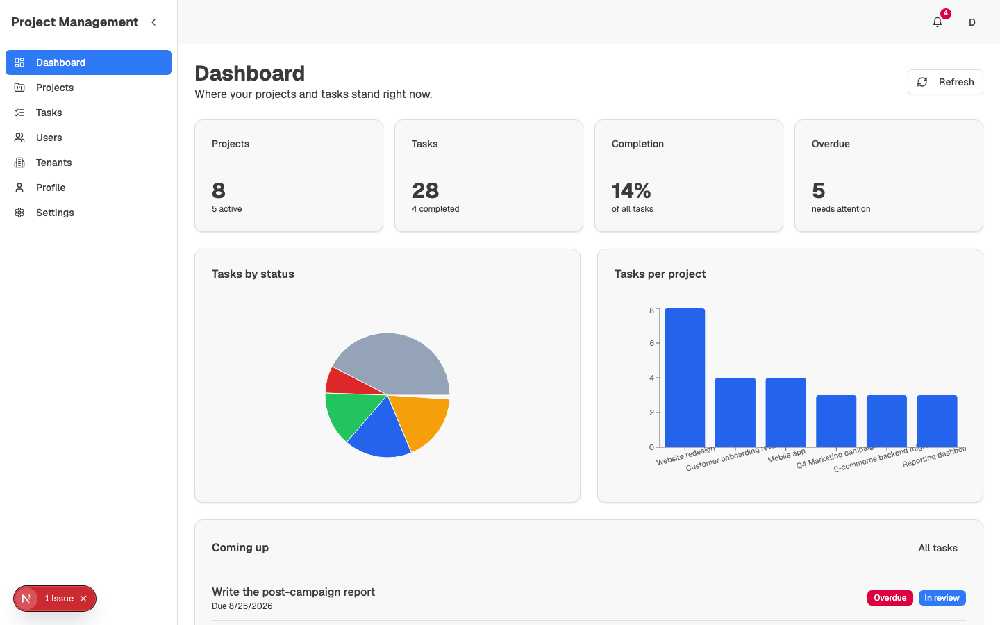
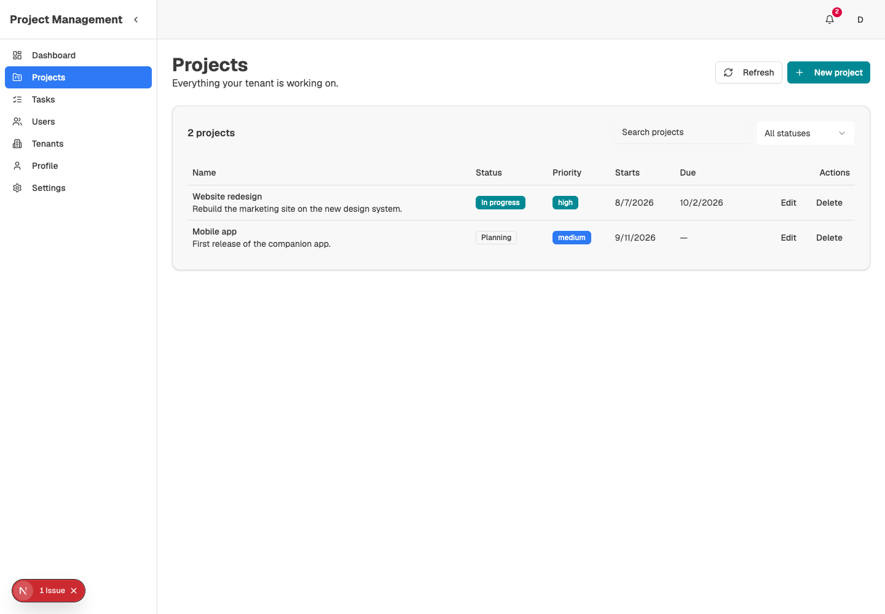
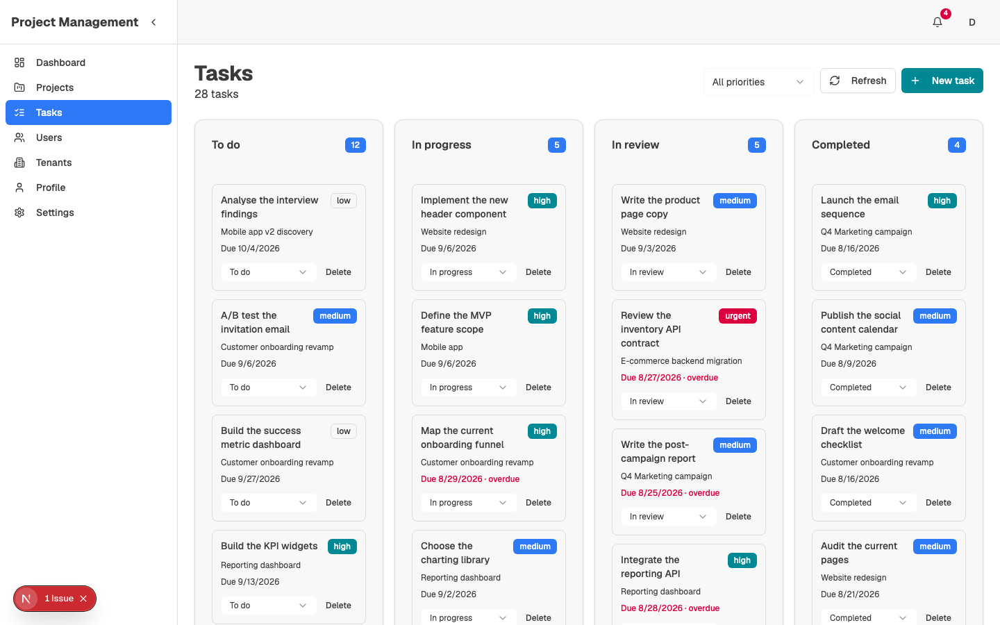
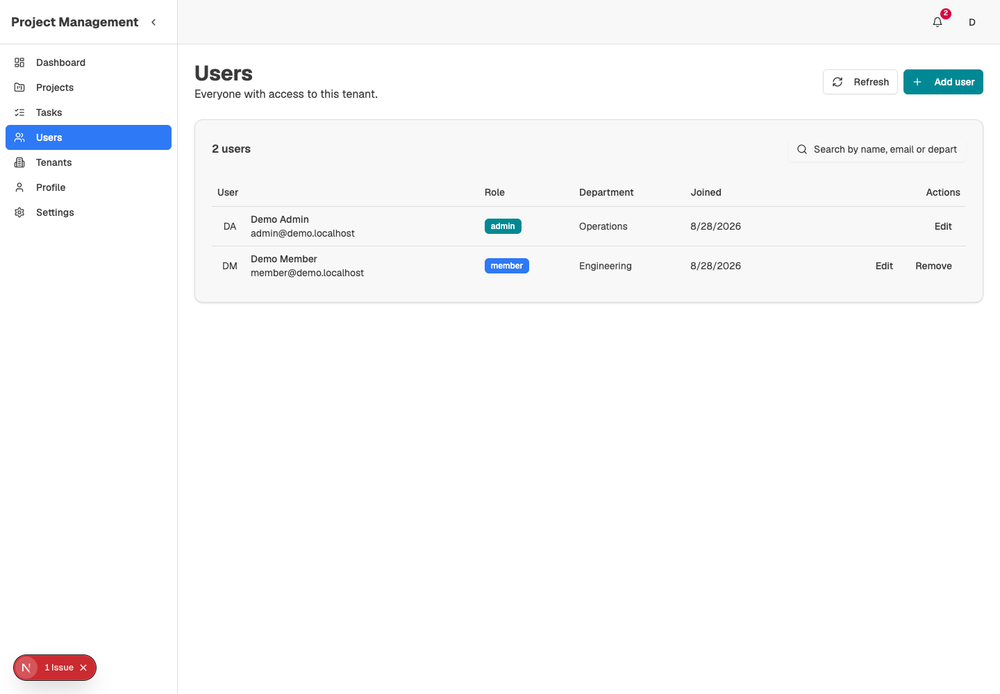
# 1) Local database (Supabase CLI) npx supabase start # 2) Schema and seed data — apply in order psql "$DB_URL" -f scripts/01-tenants-and-plans.sql psql "$DB_URL" -f scripts/02-profiles-projects-tasks.sql psql "$DB_URL" -f scripts/03-notifications.sql psql "$DB_URL" -f scripts/04-seed-demo-data.sql # 3) Backend (NestJS on 3001) — needs Supabase URL + service role key cd backend SUPABASE_URL=http://127.0.0.1:54321 SUPABASE_SERVICE_ROLE_KEY=... npm run start:dev # 4) Frontend NEXT_PUBLIC_API_URL=http://localhost:3001/api/v1 npm run dev # App: http://localhost:3000
admin@demo.localhost / DemoPassword123! — there's also a member account, same password, at member@demo.localhost.What it solves: an RTL-first car booking platform. Filters on transmission, fuel, seats and price; a radius search that finds cars near a specific branch using PostGIS; a booking flow with payments and refunds; reviews with owner replies; and an admin dashboard for the fleet. The whole thing — PostGIS included — starts with one docker compose command.
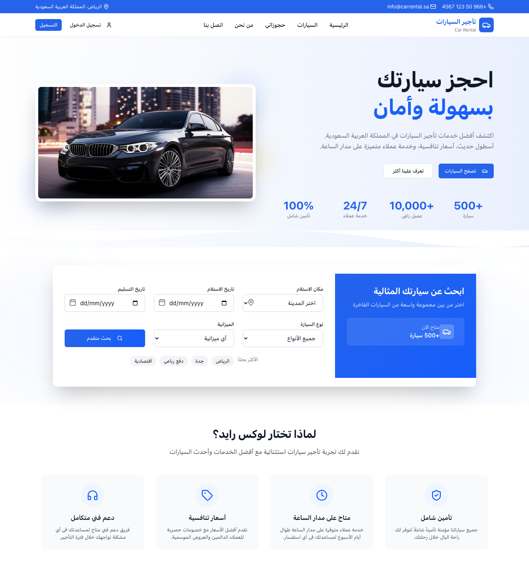
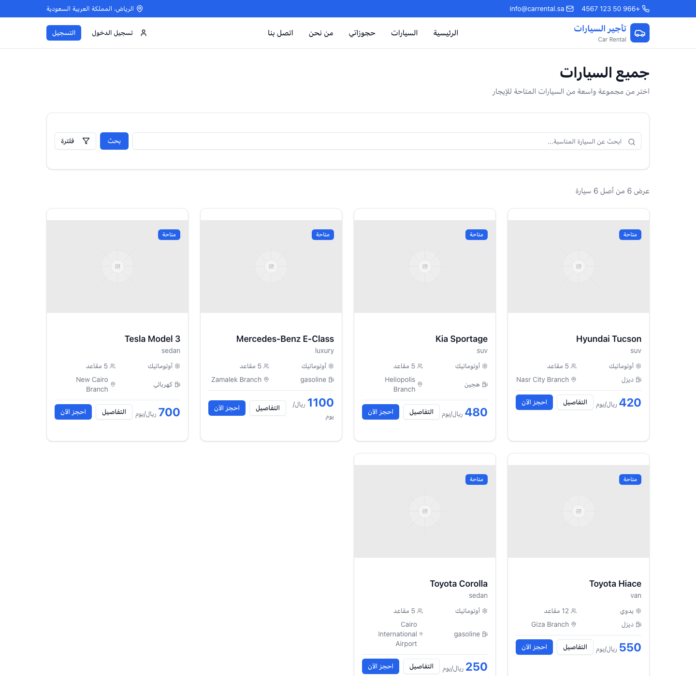
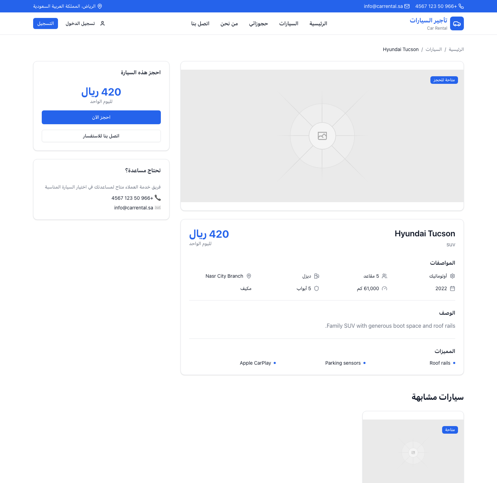
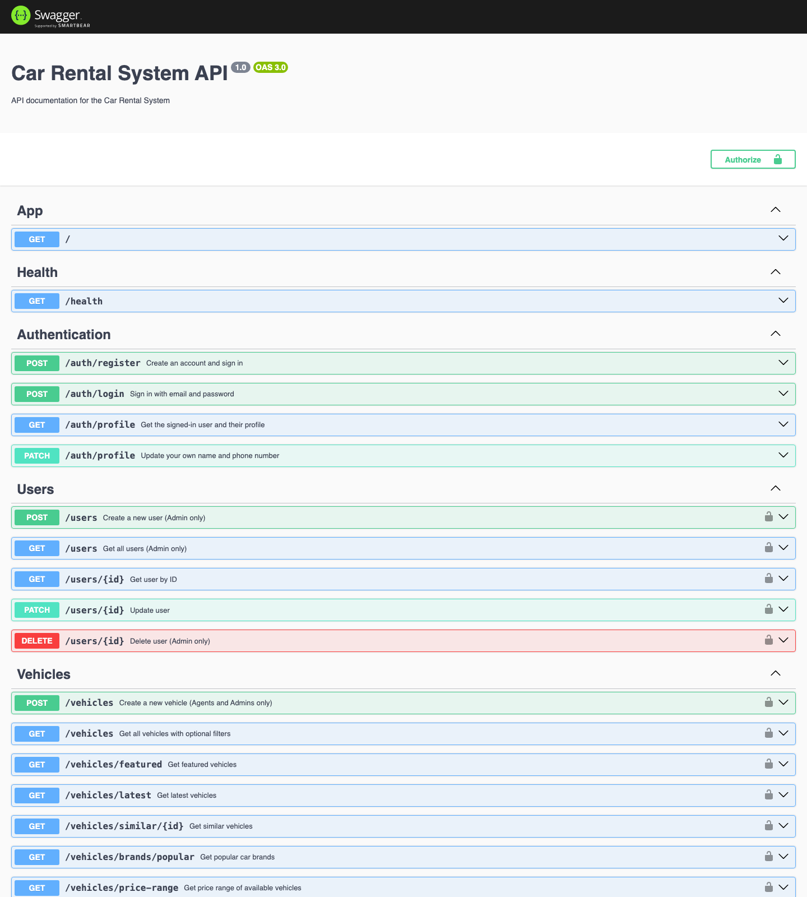
# One command: PostGIS, migrations, seed data, web app and API.
git clone https://github.com/Mahmod-mourad/Car-Rental-System.git
cd Car-Rental-System
docker compose up --build
| Web app | http://localhost:3000 |
| API | http://localhost:3001 |
| Swagger | http://localhost:3001/api |